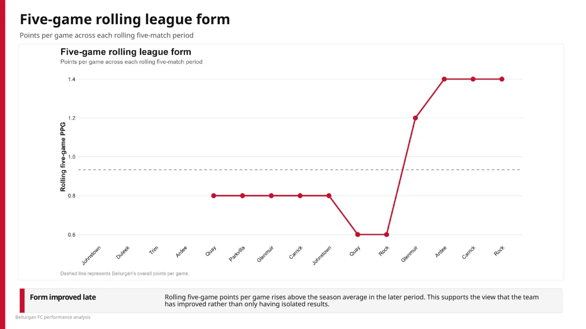
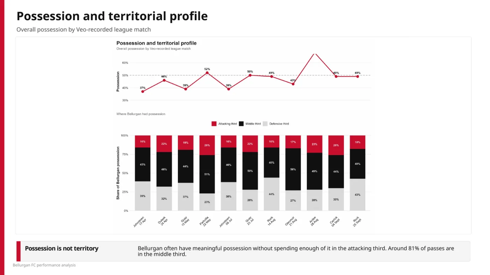
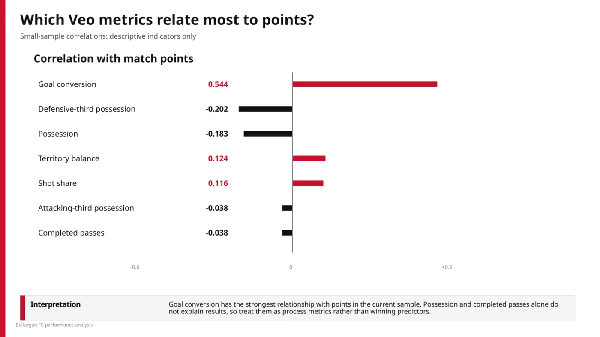
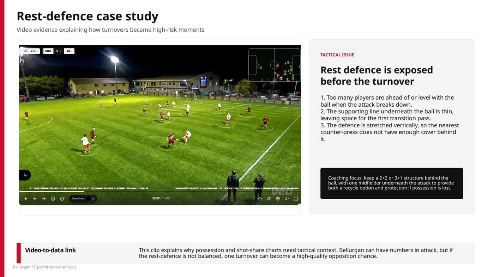
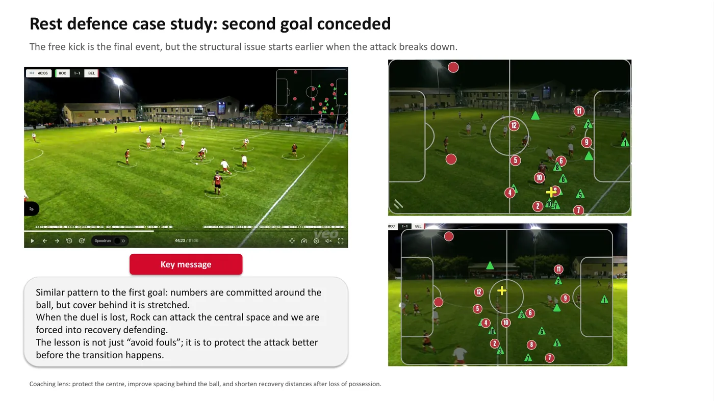
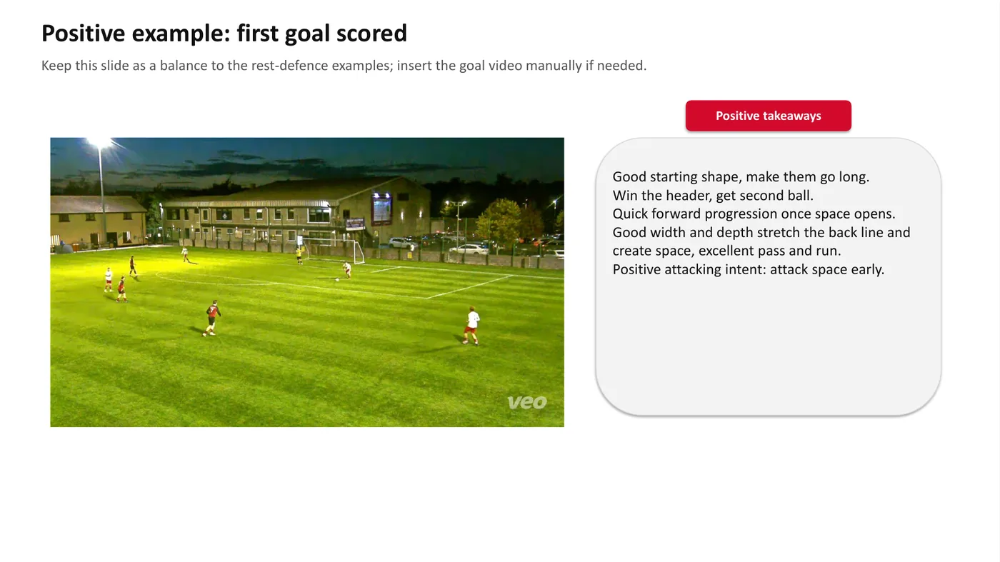
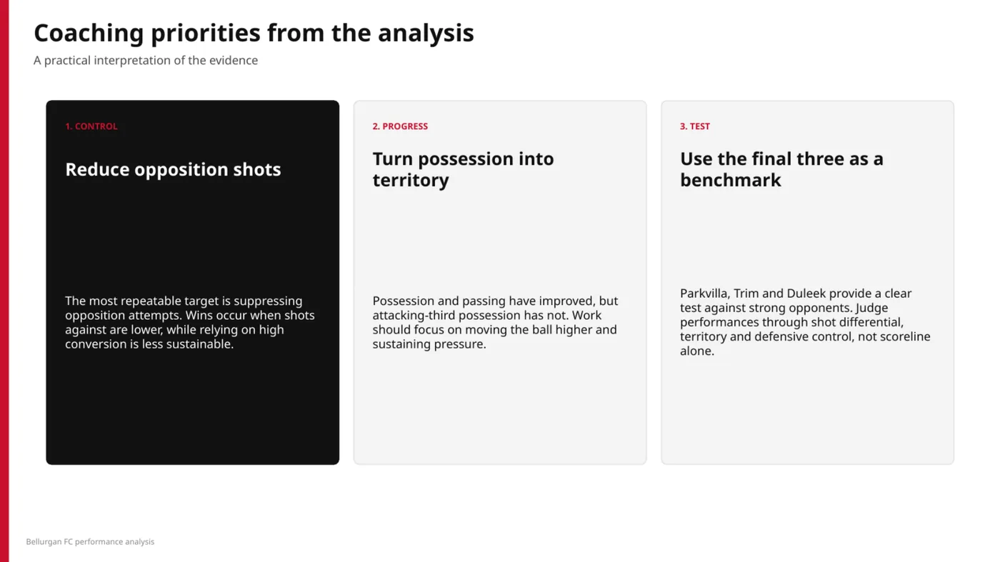

Applied Sport // Bellurgan FC 2025/26
SOCCER
ANALYTICS_
A practical case study showing how match data and video can be connected: measure the trend, identify the tactical mechanism, then give coaches something actionable.
Turn match data into coaching decisions
The analysis combined full league results with Veo-recorded performance data and selected video sequences. The aim was not simply to describe possession or shots, but to understand what was improving, what remained problematic and where tactical work could have the greatest impact.
Form improved late

Evidence of improvement
The results story was not based on one isolated win. The rolling five-match view showed a clear rise in points per game during the later part of the season, giving a better basis for saying that form had improved.
Analytical lesson: smooth the sequence before interpreting a run of individual results.
Possession is not territory
More of the ball did not automatically mean more threat
Possession improved, but the territorial distribution showed that a large share of the ball was still being used in the middle third. Attacking-third possession did not rise at the same rate.
Coaching implication: improve progression and sustain pressure higher up the pitch rather than treating possession percentage as the target.

Use correlation carefully

Goal conversion had the strongest observed relationship
In the available sample, goal conversion had the strongest positive relationship with match points. Possession and completed passes did not explain results on their own.
Methodological constraint: the sample is small. The correlations are used to frame questions, not to claim causal relationships.
Video explains the mechanism
The most useful part of the work was connecting the charts to match footage. The numbers pointed towards shot suppression and territory; the video showed how the team could become vulnerable before the turnover occurred.
Rest defence exposed before the turnover

Same pattern, second goal

Keep the positive actions

Attack space early when the trigger appears
The positive example provided balance to the defensive findings. The sequence showed the value of forcing a long ball, winning the aerial/second-ball contest, then progressing quickly once space opened.
Coaching message: protect the attack when possession is secure, but retain the intent to play forward quickly when transition space appears.
Coaching priorities

1. Control
Reduce opposition shots and protect central transition space.
2. Progress
Turn improved possession into more attacking territory and sustained pressure.
3. Test
Use stronger opponents as a benchmark, judging performance through shot differential, territory and defensive control rather than scoreline alone.